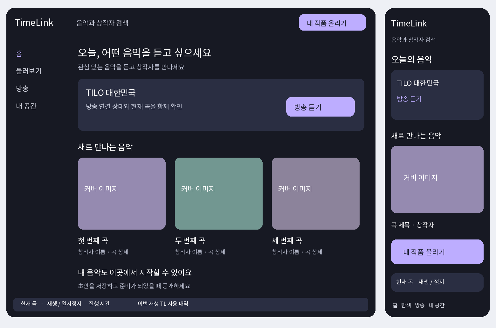

TimeLink · Word 문서 다운로드
기획안 1차 / 01
타임링크 프론트엔드 전면 리뉴얼 기획서
일반 회원의 음악 이용과 창작자의 활동을 하나의 서비스 경험으로 연결하는 화면 개편안이다. 이미 마련된 백엔드 공통 모듈을 활용하고, 첫 방문부터 청취·참여·창작 등록·수익 확인까지 이어지는 이용 흐름을 다시 구성한다.
이번 리뉴얼의 중심은 음악을 찾고 듣는 사람이다. 회원은 하나의 계정으로 시작하며 자신의 작품을 올릴 때 창작 기능을 사용한다. 창작자도 다른 음악을 듣고 참여하는 같은 회원이다. 계정은 유지하고, 활동과 권한에 따라 필요한 작업 공간을 제공한다.
기획의 출발점
현재 타임링크에는 회원 인증, TL3 V5 재생, V5 경제원장, 지갑, 결제, 광고 보상, 방송 권한 등 공통 기반이 존재한다. 프론트엔드 개편은 이 기능의 호출과 표현을 정리하는 작업이다. 연결 중 확인되는 누락은 백엔드 보완 항목으로 별도 기록한다. 기존 구현이 있다는 사실과 운영 환경에서 검증됐다는 사실은 구분한다.
| 구분 | 이번 기획에서 다루는 범위 |
|---|
| 서비스 구조 | 회원 진입, 공통 메뉴, 창작 전환, 사업자 및 운영 화면의 구분 |
| 화면과 디자인 | 핵심 화면 명세, 데스크톱·모바일 배치, 공통 컴포넌트 |
| 연결과 전환 | 기존 API 재사용, URL 호환, 데이터·재생 상태 유지 |
| 검증과 출시 | 이용 시나리오별 검수, 단계 공개, 되돌리기와 운영 지표 |
문서의 적용 상태
이 문서는 2026년 10월 24일까지의 대화와 추적·후속 수정 기록을 바탕으로 작성한 제안이다. 메뉴명, 시각 디자인, 화면 배치는 제안이며 아직 확정·배포된 결과가 아니다. 경제 정책과 권리 처리 원칙은 기존 결정을 따른다. 본 기획서 작성으로 사이트나 백엔드 코드를 변경하지 않는다.
추진 순서는 공통 화면 틀과 재생기, 일반 이용 흐름, 창작 공간, 방송·사업자 공간, 운영 검증이다. 단계별 완료 증거를 남기고 다음 범위로 넘어간다.
기획안 1차 / 02
회원 구조와 전체 메뉴
기본 메뉴는 홈, 둘러보기, 방송, 내 공간으로 구성한다. 데스크톱에서는 같은 순서의 왼쪽 메뉴를 사용하고 모바일에서는 하단 탐색을 제공한다. 검색과 내 작품 올리기는 모든 핵심 화면에서 찾을 수 있게 배치한다. 메뉴의 위치와 표현은 접속 기기에 맞추되 목적지는 동일하게 유지한다.
| 화면 | 주요 내용 | 회원의 다음 행동 |
|---|
| 홈 | 이어 듣기, 음악과 창작자 소개, TILO 연결 | 음악 듣기 또는 창작자 방문 |
| 둘러보기 | 통합 검색, 장르, 곡·창작자·채널 목록 | 필터 적용 후 상세 보기 |
| 방송 | TILO 국가 방송, DJ 방송, 현재 곡 | 방송 연결 후 곡 저장·팔로우 |
| 내 공간 | 저장한 음악, 팔로우, 활동, 지갑, 내 작품 | 이용 기록 확인 또는 작품 관리 |
| 내 작품 올리기 | 창작 등록과 기존 음원 등록의 선택 | 초안 작성과 등록 |
| 활동 공간 | 카페·인카·DJ·광고 운영 진입 | 활동별 권한 확인 후 관리 |
| 운영센터 | 관리자 전용 업무와 공용 관리대장 | 심사·정책·장애 처리 |
가입과 역할
가입 단계에서는 이메일 인증과 필수 동의를 정확히 완료한다. 음악 취향 선택은 건너뛸 수 있게 한다. 이미 결정한 가입 3단계 원칙을 유지하고, 역할 선택 때문에 계정을 다시 만들게 하지 않는다. 사업자·직원·DJ·관리자 권한은 서버가 확인한 상태로 판단한다.
방문자는 공개 목록과 소개를 볼 수 있다. 청취·저장·댓글 등 인증이 필요한 행동을 누르면 해당 이유를 안내하고 로그인 후 원래 위치로 돌아온다. 비회원 무료 재생은 이번 기획에 포함된 기존 정책으로 간주하지 않는다. 실제 API가 허용하는 범위를 먼저 따른다.
창작자와 권리자의 구분
작품을 등록하면 내 작품 관리가 나타나지만, 등록 행위만으로 권리 인증 표시나 지급 자격을 부여하지 않는다. 창작자 프로필, 등록자, 확인된 권리자는 데이터와 화면에서 구분한다. 운영센터 주소를 숨기는 처리와 별개로 모든 운영 API는 서버 권한 검사로 보호한다.
기획안 1차 / 03
홈과 음악 발견 화면
홈의 첫 화면은 음악 선택에 집중한다. 재방문 회원에게는 실제 기록이 있는 경우 이어 듣기를 먼저 보여주고, 신규 회원에게는 편집한 음악 목록과 방송 진입을 제공한다. 처음부터 활동 이력이 없는 사람에게 개인화 추천이라고 표시하지 않는다. 창작 권유는 음악 영역 아래에 자연스럽게 배치한다.
홈의 콘텐츠 순서
상단에는 검색과 계정 메뉴를 두고, 본문에는 이어 듣기 또는 오늘의 음악, TILO 방송, 새로운 곡, 창작자 소개, 내 작품 올리기 안내 순으로 배치한다. 카페·인카는 둘러보기의 채널 영역과 활동 공간에서 연결한다. 모든 기능을 홈의 큰 버튼으로 나열하지 않는다.
| 공통 요소 | 보여줄 정보 | 동작 원칙 |
|---|
| 곡 카드 | 커버, 제목, 가수, 등록·권리 상태에 맞는 표시 | 재생과 상세 이동을 다른 조작으로 제공 |
| 창작자 카드 | 프로필, 활동명, 공개 작품, 팔로우 | 확인되지 않은 권리 인증 표시는 제외 |
| 방송 카드 | 국가·언어, 실제 연결 상태, 현재 곡 정보 | 연결 성공 전에는 방송 수신 중으로 표시하지 않음 |
| 검색 결과 | 곡·창작자·채널 탭과 일치 정보 | 외부 메타데이터 검색과 내부 청취 검색을 구분 |
| 빈 목록 | 결과가 없는 이유와 다음 행동 | 가짜 곡·조회 수·성과 수치로 채우지 않음 |
검색과 필터
검색어, 장르, 정렬 조건, 선택 탭은 주소와 뒤로가기에 반영한다. 곡을 본 뒤 돌아오면 검색 결과와 스크롤 위치를 복원한다. 초기에는 실제 보유 메타데이터와 검증된 집계로 검색·편집 목록을 구성한다. 추천 알고리즘 고도화는 별도 과제로 둔다.
곡 상세와 창작자 프로필
곡 상세는 커버와 제목, 재생, 필요한 TL과 이용 가능 상태를 먼저 보여준다. 아래에는 작사·작곡·가수·문자 가사, 권리 정보, 댓글과 관련 곡을 배치한다. 업로더에게 허용된 수정 항목만 편집 기능을 제공한다. 이전에 제거한 자동 가사 싱크 기능을 다시 요구하지 않는다. 창작자 프로필은 공개 작품과 소개, 팔로우를 중심으로 구성한다.
기획안 1차 / 04
재생과 지갑의 연결
재생기는 어느 화면에서나 같은 상태를 보여줘야 한다. 곡 상세에서 시작한 음악을 홈이나 내 공간으로 이동한 뒤에도 제어할 수 있게 한다. 이를 위해 새 화면에는 공통 재생 상태를 한 곳에서 관리하는 구조를 적용하고 기존 TL3 V5 재생 엔진을 연결한다. 페이지 이동으로 재생이 종료되는 과도기 경로는 먼저 목록화한다.
재생 전 확인과 충전
재생 버튼을 누르면 곡 이용 가능 상태, 세션 권한, 이용권·충전 상태를 확인한다. 부족하면 필요한 양과 현재 보유량을 보여주고 충전으로 연결한다. 결제 후에는 서버 확인 결과로 지갑을 갱신하고 원래 곡으로 돌아온다. 파일 형식과 곡별 재생 횟수 충전 구조는 유지하며 TL 충전과 재생 횟수 충전을 화면에서 구분한다.
개인 청취의 이번 재생 사용량은 실제 소리가 재생된 시간에 따라 1초당 1TL로 표시한다. 일시정지와 버퍼 대기는 과금 구간에서 제외한다. 종료·중단 후에는 서버 정산 결과로 화면을 맞춘다. 브라우저의 임시 카운터를 확정 거래로 저장하지 않는다. TILO 수신에는 개인 청취 차감을 적용하지 않는다.
| 지갑 항목 | 화면 표현 | 행동 |
|---|
| TL_P | 구매 TL과 서버가 확인한 이용 가능 잔액 | 충전·일반 환전 자격 확인 |
| TL_A | 광고로 받은 TL과 사용 범위 | 광고 활동 확인·음악 이용 |
| TL_B | 활동·보너스 TL과 사용 범위 | 지급 근거·사용 내역 확인 |
| 창작 수익 | 곡별 발생·보관·지급 상태 | 권리 확인·기여도 기반 환전 안내 |
| 거래 내역 | 발생 이유, 시간, 금액, 처리 상태 | 거래 상세와 오류 문의 |
정책을 읽기 쉬운 정보로 표현
지갑은 V5 경제원장을 기준으로 표시한다. 광고와 활동 보상의 환전 금지 원칙을 명확히 안내하고, 일반 회원의 구매 이력 50% 기준을 창작 수익에 적용하지 않는다. 창작자·권리자의 적용 대상 음악 수익 70%는 TL로 지급하며 현금 환전율은 검증된 기여도에 따라 결정한다. 미확정 환전 구간은 예상 금액으로 임의 제시하지 않는다.
결제 대기, 실패, 재시도, 중복 클릭을 각각 처리한다. 확정 전에는 성공 금액을 먼저 가산하지 않는다. 새로고침과 여러 탭 이용 뒤에도 원장과 화면의 잔액이 일치해야 한다.
기획안 1차 / 05
첫 작품 등록과 창작자 스튜디오
내 작품 올리기를 누르면 직접 만든 작품과 기존 발매 음원 중 무엇을 등록하려는지 먼저 묻는다. 같은 계정에서 시작하지만 이후 안내와 권리 절차는 분리한다. 창작 등록의 목표는 첫 시도에서 초안을 남기고, 보완할 내용을 이해하며, 등록 결과를 확인할 수 있게 하는 것이다.
창작 등록
첫 단계에서는 파일과 기본 곡 정보를 입력한다. 두 번째 단계에서는 커버, 가수·작사·작곡, 문자 가사와 공개 설정을 보완한다. 마지막 단계에서 권리 확인과 처리 결과를 검토한다. 사용자가 입력한 초안과 서버가 확정한 등록 상태를 구분하고, 변환·업로드가 실패하면 성공 항목은 보존한 채 실패 단계만 다시 실행한다.
기존 음원 등록은 최대 10곡 묶음 작업으로 제공한다. 곡별 검색 결과를 확인해 선택하고 각 파일의 진행·성공·실패를 따로 표시한다. 현재 구현된 용량·형식 제한을 그대로 안내한다. Spotify 등에서 가져온 정보는 곡 정보 후보이며 권리 입증 자료가 아니다. 창작 등록의 다중 파일 지원은 실제 계약을 확인한 뒤 적용한다.
| 등록 상태 | 회원이 보게 되는 내용 | 가능한 다음 행동 |
|---|
| 초안 | 아직 제출하지 않은 정보와 남은 입력 | 수정·저장·삭제 |
| 처리 중 | 업로드·제조 등 실제 처리 단계 | 상태 확인·안전한 재시도 |
| 권리 검토 대기 | 필요 서류와 검토 진행 상태 | 자료 제출·보완 |
| 공개 가능 또는 공개 | 서버에서 승인한 공개 상태와 곡 주소 | 공개 설정·허용 정보 수정 |
| 보완 또는 제한 | 구체적인 사유와 해결 방법 | 재제출·문의·허용된 이의 절차 |
등록 후의 작업 공간
스튜디오 첫 화면에는 내 작품 목록과 조치가 필요한 항목을 먼저 보여준다. 수익 화면은 재생 통계, 발생 TL, 보관 중인 권리자 몫, 확정 지급을 구분한다. 통계가 없으면 첫 공개와 소개 방법을 안내한다. 실제 지급되지 않은 보관금을 출금 가능 금액에 합산하지 않는다.
기존 발매 음원을 등록한 사람은 발굴 참여자로 표시한다. 권리자는 별도의 곡별 청구와 입증 절차로 들어온다. 서류 제출·조사·승인·지분 확인·보관금 지급 연결은 현재 미완결 과제로 남아 있으므로, 화면 공개 전에 필요한 백엔드와 운영 절차를 함께 완성해야 한다.
기획안 1차 / 06
방송과 사업자 활동 공간
방송은 일반 청취와 운영을 명확히 나눈다. 일반 회원에게는 들을 수 있는 방송과 현재 곡을 제공하고, 운영자에게는 방송 편성·권한·송출 상태·정산 검토를 제공한다. 일반 화면이 관리자 API를 호출하거나 관리자 주소로 되돌아가지 않도록 공통 메뉴와 페이지 내부 이동까지 검사한다.
TILO 청취 화면
국가와 언어, 연결 버튼, 실제 수신 상태, 현재 곡, 최근 재생 목록을 중심으로 구성한다. 현재 곡에서는 곡 상세와 창작자 프로필, 저장·팔로우로 이동할 수 있어야 한다. 시각적 DJ 연출과 실제 오디오 수신 상태는 각각 표현한다. 준비 화면에 움직이는 캐릭터가 있다는 이유로 방송 중이라고 표시하지 않는다.
TILO는 플랫폼 소유의 중앙방송이다. 실제 곡별 방송 초에 1TL과 0.3 가중치를 적용하고, 각 국가 현지 자정에 권리자 70%와 플랫폼 30%로 정산한다. 플랫폼 부담과 플랫폼 수익을 V5 경제원장에 기록하며 청취자에게 중복 부과하지 않는다. 상시 서버 송출과 운영 정산 증거의 미완료 상태를 디자인으로 가리지 않는다.
| 공간 | 일반 회원 화면 | 활동 권한이 있는 회원 화면 |
|---|
| DJ | 방송 소개·청취·팔로우 | 방송 준비·편성·연결 상태 |
| 카페 | 카페 카드·소개·현재 방송·커뮤니티 | 방송 선택·대표 및 직원 권한 관리 |
| 인카 | 공개 차량 카드·상세·커뮤니티 | 내 차량·사진·매매 상태·방송 관리 |
| 광고 | 이용 가능한 광고·보상 조건·완료 상태 | 광고 등록·예산·성과 확인 |
현장 사용을 고려한 배치
카페 직원 화면은 오늘의 방송과 연결·정지 상태를 크게 보여준다. 대표가 승인한 직원의 작업 범위를 서버 권한과 맞추고 정산·예산 변경은 허용 권한에서만 제공한다. 국세청 연동은 현재 중지 결정을 유지한다. 인카 재생 조작은 큰 버튼으로 구성하며 복잡한 차량 편집은 별도 관리 화면에 둔다.
카페·차량 커뮤니티는 댓글·좋아요·공유·신고의 같은 컴포넌트를 사용한다. 차량번호 등 비공개 항목은 공개 화면으로 보내지 않는다. 외부 중고차 앱 연동은 제외한다. 기존 방송과 사업자 기능의 URL은 새 목적지와 대응시켜 전환한다.
기획안 1차 / 07
화면 배치와 시각 디자인
음악 커버와 실제 회원 콘텐츠를 중심으로 화면을 구성한다. 기존 지갑 화면에서 합의한 배경·글꼴·글자색을 초기 기준으로 삼고, 전역 디자인 값으로 통일한다. 아래 배치는 정보 구조를 확인하기 위한 제안이며 색상 확정본은 아니다. 커버와 회원 이름은 예시다.

데스크톱과 모바일 홈의 배치 예시 실제 사이트 화면이 아님
| 요소 | 공통 설계 기준 |
|---|
| 색과 글자 | 기본 배경·본문·보조 글자·주요 버튼·상태색을 전역 관리 |
| 이미지 | 정사각형 곡 커버·원형 프로필·가로형 채널 이미지를 구분 |
| 모바일 | 하단 4개 메뉴와 미니 플레이어를 겹치지 않게 배치 |
| 조작과 접근성 | 기본 본문 16px 이상과 주요 터치 영역 44px 이상을 목표로 검수 |
| 상태 표현 | 로딩·빈 목록·권한 없음·실패·재시도를 같은 규칙으로 제공 |
모바일에서는 가로 넘침을 없애고 표·관리 내역을 세로 상세로 전환한다. 글자 확대와 키보드 탐색에서도 조작할 수 있어야 한다. 핵심 대비는 WCAG AA 수준을 목표로 측정하며, 애니메이션 감소 설정을 따른다. 이미지의 사용 권한·출처와 대체 텍스트를 관리한다.
기획안 1차 / 08
운영센터와 관리자 업무
운영센터는 일반 이용 메뉴와 분리한 하나의 관리자 작업 공간으로 정리한다. 현재의 관리자 화면과 각 모듈의 운영 화면은 같은 권한 체계 안에서 담당 업무별로 묶는다. 화면 이름이 다르다는 이유로 서로 다른 관리자 계정을 요구하지 않는다. 국가별·업무별 범위는 서버가 확인한 권한으로 제한한다.
| 운영 메뉴 | 대표 업무 | 확인할 기록 |
|---|
| 운영 현황 | 오류·검토 대기·송출 문제 확인 | 실제 상태와 마지막 확인 시간 |
| 회원과 권한 | 사업자·직원·DJ·국가별 권한 처리 | 변경 전후 값·담당자·사유 |
| 작품과 권리 | 등록 검토·보완·권리 청구 처리 | 서류·검토 결과·승인 근거 |
| 방송 운영 | 국가별 편성·송출·이용허락 관리 | 실제 송출 기록·장애·허가 상태 |
| V5 경제원장 | 거래·보관금·정산·환전 검토 | 거래 식별자·잔액·처리 상태 |
| 보상 규칙 | 수동 규칙 변경과 적용 시점 확인 | 정책 버전·이력·동시 수정 충돌 |
| 신고와 문의 | 댓글·콘텐츠 신고 검토 | 대상·조치·담당자·처리 시간 |
| 개발 관리대장 | 항목별 상태·수정 일기·검증 증거 | 이전 동작·수정 동작·운영 확인 |
실수와 중복 처리를 줄이는 구조
조회와 실행을 구분하고, 승인·지급·차감 등 중요한 동작에는 대상과 금액, 영향을 확인할 수 있는 검토 화면을 제공한다. 실행 후에는 서버 결과와 처리 식별자를 남긴다. 버튼 중복 클릭 방지에 더해 서버의 중복 처리 방지와 충돌 감지를 사용한다. 실패를 성공 메시지로 바꾸지 않는다.
공용 관리대장은 서버 상태를 기준으로 읽는다. 다른 관리자가 먼저 수정했으면 차이를 보여주고 병합 또는 재입력을 안내한다. 브라우저 보관 기록은 복구 자료로 취급한다. 코드 작성, 검사 통과, 배포, 운영 확인을 서로 다른 상태로 기록한다.
미완료 정책의 표현
보상 규칙은 초기 수동 운영을 유지한다. 자동 수익 안전 솔루션은 충분한 운영 데이터와 수익 구조를 확보한 이후의 별도 과제로 둔다. 권리자 현금 환전율, 조사 에이전트의 업무 범위, 미완료 지급·교환 절차는 정책 또는 기능 준비 상태를 표시하며 실행 가능한 것처럼 버튼을 열지 않는다.
기획안 1차 / 09
기존 백엔드와 프론트엔드 구조
전면 리뉴얼은 기존 API와 데이터 자산을 활용한다. 공통 인증, 파일 처리, TL3 V5 재생, V5 경제원장, 결제·광고·보상 규칙을 화면별로 재구현하지 않는다. 프론트엔드에서는 API 접근 계층과 공통 상태, 화면 컴포넌트를 정리하고 실제 요청·응답 계약을 확인한다.
| 영역 | 재사용할 기반 | 프론트엔드 책임 |
|---|
| 계정 | 이메일 인증·로그인·서버 권한 | 로그인 복귀·세션 만료·권한별 표시 |
| 음악 | 공개 목록·곡 상세·메타데이터 | 검색·필터·상세·허용된 정보 편집 |
| 재생 | TL3 V5 플레이어와 이용 세션 | 공통 플레이어·재생 상태·오류 복구 |
| 경제 | V5 지갑·거래·결제·광고·환전 신청 | 확정 잔액·진행 상태·명확한 사용 안내 |
| 등록 | V5 제조·기존 음원 비공개 등록 | 초안·곡별 진행·재시도·권리 상태 |
| 방송 | 국가별 서비스 권한·편성·상태 | 일반 수신과 관리자 운영 경로 분리 |
| 운영 | 관리대장·정책 버전·감사 기록 | 동시 수정 처리·근거 확인·이력 보기 |
새 공통 화면 틀
공통 화면 틀에는 탐색 메뉴, 검색, 계정, 알림과 재생기를 둔다. 경로가 바뀌어도 재생기 인스턴스와 필요한 상태를 유지하는 구조를 권장한다. 검색 조건은 URL에, 초안은 소유 계정과 연결된 저장소에, 확정 잔액과 권한은 서버에 둔다. 다른 계정으로 로그인하면 이전 계정의 캐시와 초안을 분리한다.
프레임워크 선정은 현재 저장소의 실행·배포 경로를 먼저 확인한 뒤 결정한다. 현재 다중 HTML을 한 번에 삭제하지 않고 새 화면 틀을 별도 경로에서 구축해 순서대로 전환한다. 인증 정보의 저장 방식은 기존 보안 계약을 확인하고, 잔액·권한·등록 상태를 화면의 로컬 값만으로 판정하지 않는다.
화면별 연결 명세
각 화면에는 호출 API, 필수 권한, 요청 필드, 응답 상태, 오류, 중복 방지 키, 갱신해야 할 상태를 기록한다. 정확한 엔드포인트는 구현 시 현재 코드와 대조해 확정한다. 백엔드 미완결 항목은 화면 명세와 연결해 추적하고, 임시 성공 응답으로 대체하지 않는다. 재생·결제·권리 데이터는 기존 정책과 파일 방식의 호환성을 유지한다.
다국어와 국가별 표시
한국어·영어·일본어·중국어·태국어·베트남어를 공통 번역 키로 관리한다. 메뉴, 오류, 동의, 메일과 등록 상태까지 번역 범위를 대조한다. 화면 언어와 방송 국가는 따로 선택하며, 현지 시간과 거래 단위를 명시한다. 긴 번역, 글꼴 누락, 번역되지 않은 키 노출을 각 언어에서 검수한다.
기획안 1차 / 10
기존 화면의 이전 계획
리뉴얼 과정에서 기존 링크와 등록 파일, 회원 잔액, 권리 기록이 이어져야 한다. 기존 공개 URL은 새 화면으로 연결하되 곡·채널 식별자, 검색 조건, 로그인 후 복귀 목적지를 보존한다. 주소 전환은 화면 이동뿐 아니라 공유 링크와 즐겨찾기에서도 검사한다.
| 현재 화면 또는 영역 | 새 화면의 위치 | 이전 시 주의점 |
|---|
| dashboard.html | 홈과 내 공간으로 기능 분류 | 개인 요약과 운영 요약의 혼재 해소 |
| shareplace.html 및 track | 둘러보기와 곡 상세 | 곡 ID·외부 공유 링크·V5 재생 유지 |
| creator.html | 내 작품 올리기와 스튜디오 | 진행 중 등록·초안·소유권 보존 |
| radio.html | 방송의 TILO 청취 | 공개 경로와 국가 선택 유지 |
| tilo-admin 및 운영용 방송 화면 | 운영센터의 방송 운영 | 실제 현재 경로 확인 후 권한별 이전 |
| wallet 및 ads | 내 공간의 지갑과 광고 활동 | V5 거래·보상 상태·결제 복귀 유지 |
| cafe 및 incar 계열 | 채널 상세와 활동 공간 | 채널 ID·직원 권한·공개 정보 분리 |
| admin 및 관리대장 계열 | 통합 운영센터 | 세부 메뉴·이력·기존 기록 보존 |
전환 절차
먼저 기존 URL과 호출자 목록을 확정하고 각 경로의 유지·통합·폐기 계획을 작성한다. 다음으로 새 공통 화면 틀과 핵심 화면을 시험 경로에 연결한다. 검증된 기능부터 운영 경로를 전환하고, 이전 주소는 필요한 기간 동안 새 화면으로 안내한다. 중복 화면의 삭제는 호출과 접근 기록, 관리자 확인을 마친 뒤 진행한다.
플레이어가 동작 중인 화면 전환, 로그인 만료, 새로고침, 뒤로가기, 외부 링크 접속을 별도로 검수한다. 운영 배포는 마지막 정상 버전과 변경 파일을 기록하며, 되돌릴 때도 이미 확정된 원장 거래나 지급 기록을 취소한 것으로 처리하지 않는다. 프론트엔드 되돌리기와 데이터 처리는 구분한다.
자료와 기준 화면
이전 추적 보고서와 후속 수정 기록은 역사 자료로 보존한다. 리뉴얼 관리대장에는 화면별 연결 API와 검수 결과를 새로 연결한다. 기존 지갑 화면의 디자인 값은 구현 착수 시 캡처와 스타일 값으로 고정해, 작업 중 페이지마다 색이나 글꼴이 달라지는 문제를 막는다.
기획안 1차 / 11
개발 순서와 완료 기준
일정은 현재 인력, 화면 수, 배포 방식의 확인 후 산정한다. 우선 아래 여섯 단계의 범위와 완료 기준을 고정한다. 한 단계의 화면이 예쁘게 보이는 것만으로 다음 단계로 넘기지 않고, 연결된 실제 동작과 데이터 결과를 함께 확인한다.
| 단계 | 작업과 산출물 | 완료 증거 |
|---|
| 1 구조 확정 | 전체 URL 대응표·화면 목록·API 계약·디자인 기준 | 기존 기능의 새 위치와 미완료 항목 확인 |
| 2 공통 화면 | 탐색·로그인 복귀·재생기·공통 카드·상태 UI | 모바일·데스크톱에서 상태 일관성 확인 |
| 3 일반 이용 | 홈·검색·곡 상세·저장·지갑·충전 | 가입부터 청취·거래 확인까지 통과 |
| 4 창작 활동 | 등록 선택·초안·진행·작품 관리·권리 안내 | 첫 등록부터 공개·수익 상태 확인 |
| 5 방송과 운영 | TILO·DJ·카페·인카·관리자 화면 | 역할별 접근과 실제 방송 상태 검증 |
| 6 전환과 공개 | 기존 링크 호환·오류 수집·운영 점검 | 핵심 시나리오 통과와 복구 절차 확인 |
대표 검수 시나리오
신규 회원은 가입과 이메일 인증을 마친 뒤 원래 곡으로 돌아와야 한다. 잔액 부족 시 충전하고, 중복 요청 없이 재생하며, 일시정지 후 차감이 멈춰야 한다. 곡 종료와 중단 뒤 지갑·곡 카드·거래 내역을 대조한다. TILO 수신에서는 개인 잔액이 차감되지 않는지 확인한다.
창작자는 등록 도중 나갔다 돌아와 작업을 이어가고 실패 파일만 재시도할 수 있어야 한다. 기존 음원 10곡 등록에서는 곡별 결과와 비공개·권리 대기 상태를 확인한다. 일반 회원은 운영 API에 접근할 수 없어야 하며, 관리자는 권한 범위 안에서만 검토·변경할 수 있어야 한다. 같은 계정의 여러 탭과 관리자 동시 수정도 확인한다.
사용성과 성능 목표
360px 모바일부터 넓은 화면까지 가로 넘침과 조작 겹침을 검사한다. 초기 성능 목표는 LCP 2.5초 이하, INP 200ms 이하, CLS 0.1 이하로 제안한다. 실제 사용자 데이터의 75백분위로 평가하고 데이터가 부족한 초기에는 측정 환경을 명시한다. 음악 시작 지연과 끊김은 기기·네트워크·오디오 경로별로 따로 측정한다. 이는 현재 달성 수치가 아니다.
기획안 1차 / 12
운영 지표와 착수 범위
리뉴얼의 효과는 방문자가 실제로 음악을 듣고 다시 돌아오는지, 창작자가 첫 등록을 끝낼 수 있는지로 판단한다. 목표값은 현재 기준 데이터를 수집한 뒤 정한다. 존재하지 않는 통계나 임의 목표 달성률을 관리자 화면에 넣지 않는다.
| 지표 | 측정 정의 | 확인할 문제 |
|---|
| 첫 청취 전환 | 방문 세션 중 실제 첫 오디오 재생에 도달한 비율 | 로그인·잔액·이용 권한의 이탈 |
| 재생 안정성 | 재생 세션별 시작 실패·중단·복구 결과 | 재생 엔진·네트워크·세션 오류 |
| 창작 시작과 완료 | 등록 시작 회원 중 서버 등록 완료 비율 | 입력·업로드·제조 단계의 이탈 |
| 재방문 | 첫 이용 집단의 정해진 기간 내 재방문 비율 | 음악 발견과 관계 형성의 지속성 |
| 경제 정합성 | 표시·확정 거래 불일치와 중복 요청 처리 건수 | 지갑·결제·보상 오류 |
| 운영 처리 | 권리·신고·환전의 대기 기간과 보완 횟수 | 검토 병목과 안내 부족 |
기획상 권고안
하나의 계정, 기본 메뉴 네 개, 항상 찾을 수 있는 작품 등록, 공통 재생기, 별도 운영센터를 기준 구조로 권고한다. 기존 지갑의 시각 기준을 전역으로 통일하고 커버·프로필·채널 이미지로 콘텐츠를 드러낸다. 별도의 창작자 재가입 없이 등록을 시작하되, 공개·권리 인증·지급은 서버가 확인한 상태에 따라 제공한다.
추가로 확정할 사항
구현 착수 전에 현재 지갑의 디자인 기준값, 새 화면 틀의 기술 구성, 초기 홈 편집 목록의 운영 주체를 확정한다. 창작자 기여도별 환전 구간과 권리 조사·보관금 지급 절차는 별도 정책 과제로 남긴다. TILO 상시 송출과 교환풀 등 미완결 기능의 화면 공개 범위도 준비 상태에 맞춰 결정한다. 이 항목들은 기존 정책이 정해진 것으로 간주하지 않는다.
바로 시작할 작업
첫 구현 범위는 공통 화면 틀, 홈, 둘러보기, 곡 상세, 공통 재생기다. 이 다섯 영역으로 기존 V5 재생과 지갑을 연결해 기본 이용 경험을 먼저 완성한다. 이어 내 공간과 충전, 창작 등록과 스튜디오를 전환한다. 이번 기획의 다음 산출물은 해당 핵심 화면의 상세 설계와 실제 연결 명세이며, 운영 배포는 검수 결과를 확인한 뒤 진행한다.
기준 자료 TimeLink V5 전체 추적 보고서 및 후속 수정 기록 2026년 10월 24일 회원·권리·방송·보상에 관한 기존 합의 본문에 적힌 화면과 디자인은 리뉴얼 제안이다.